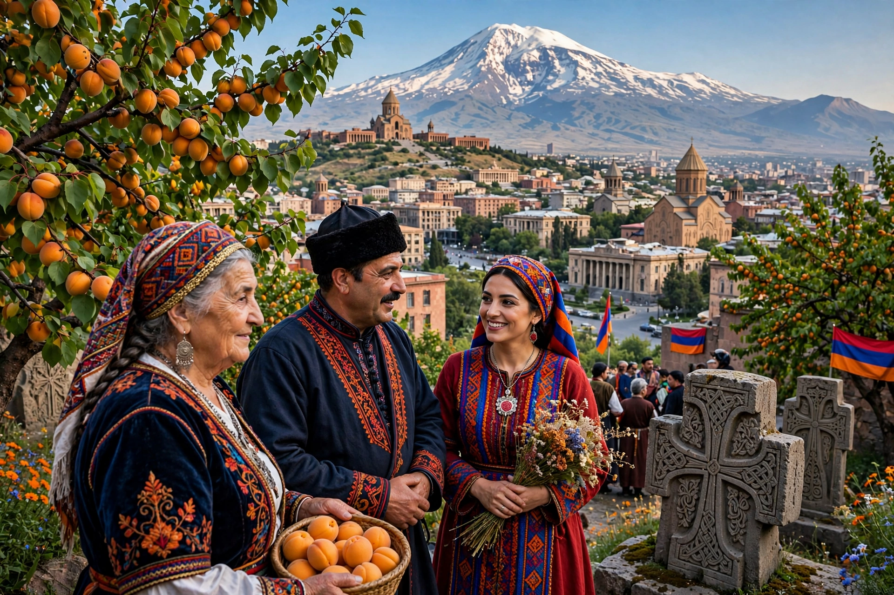

Armenians (Armenian: հայեր, hayer) are an ethnic group native to the Armenian highlands of West Asia. They speak Armenian, an independent branch of the Indo-European language family, written in its own alphabet created around 405 AD by Mesrop Mashtots.

| Armenians | |
|---|---|
| Total population | Estimated 8–11 million worldwide |
| Regions | Armenia (c. 2.8 million), Russia, United States, France, Georgia, Lebanon and a global diaspora |
| Language | Armenian |
| Religion | Predominantly Armenian Apostolic Christianity |
Ancient Armenia, at its greatest under Tigranes the Great in the 1st century BC, stretched from the Caspian to the Mediterranean. Armenia adopted Christianity as a state religion in 301. Successive Persian, Byzantine, Arab, Seljuk, Mongol, Ottoman and Russian rule followed. The Armenian genocide of 1915–1917 in the Ottoman Empire killed around a million Armenians and scattered survivors worldwide, forming the modern diaspora. Soviet Armenia (1920–1991) was followed by the independent Republic of Armenia.
Armenian culture is known for its church architecture and illuminated manuscripts, khachkar stone crosses, duduk music, and cuisine including lavash flatbread. The Armenian Apostolic Church is central to national identity.